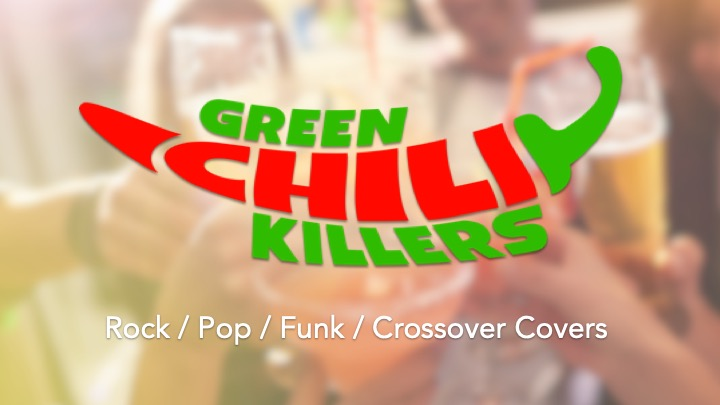

Die Green Chili Killers sind eine dynamische Coverband aus dem Raum Herrenberg, die sich auf mitreißende Auftritte bei Veranstaltungen spezialisiert hat. Mit einer Mischung aus Rock- und Pop-Hits sorgen wir für die perfekte Stimmung und machen jedes Event zu einem unvergesslichen Erlebnis.

Gesang & Gitarre
Ralf ist der Frontmann der Band und sorgt mit seiner energiegeladenen
Performance für die nötige Stimmung bei unseren Auftritten.

Keyboard & Gitarre
Matthias ist unser vielseitiger Musiker, der sowohl Keyboard als auch
Gitarre spielt. Mit seiner beeindruckenden Fähigkeit, beide Instrumente
zu meistern, bringt er eine einzigartige Dynamik in unsere Auftritte.
Seine musikalische Vielseitigkeit und Leidenschaft sorgen für
unvergessliche Momente auf der Bühne.

Bass
Frank ist der beste Bassspieler aus Herrenberg. Mit seiner
beeindruckenden Technik und Leidenschaft für das Instrument
bringt er jede Bühne zum Beben. Sein virtuoses Spiel erreicht
bei jedem Auftritt neue Höhen, besonders wenn er seinen besten
Song 'Dean Town' zum Besten gibt.

Drums
Andy ist der treibende Puls der Green Chili Killers.
Als Schlagzeuger bringt er mit seinen kraftvollen und
präzisen Rhythmen jede Show auf das nächste Level. Mit
seiner beeindruckenden Technik und Leidenschaft für das
Schlagzeug sorgt Andy dafür, dass jede Performance ein
mitreißendes Erlebnis wird. Sein dynamisches Spiel und seine
Fähigkeit, das Publikum in seinen Bann zu ziehen, machen ihn
zu einem unverzichtbaren Teil der Band.